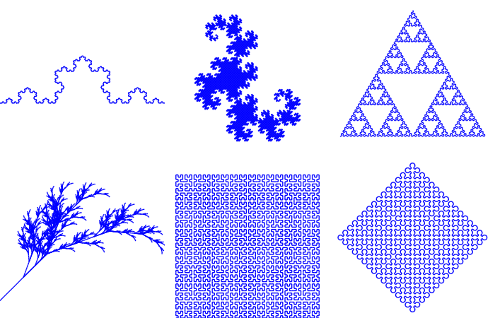

绘制L-System的分形图
相关文档： L-System分形

# -*- coding: utf-8 -*-
#L-System(Lindenmayer system)是一种用字符串替代产生分形图形的算法
from math import sin, cos, pi
import matplotlib.pyplot as pl
from matplotlib import collections
class L_System(object):
def __init__(self, rule):
info = rule['S']
for i in range(rule['iter']):
ninfo = []
for c in info:
if c in rule:
ninfo.append(rule[c])
else:
ninfo.append(c)
info = "".join(ninfo)
self.rule = rule
self.info = info
def get_lines(self):
d = self.rule['direct']
a = self.rule['angle']
p = (0.0, 0.0)
l = 1.0
lines = []
stack = []
for c in self.info:
if c in "Ff":
r = d * pi / 180
t = p[0] + l*cos(r), p[1] + l*sin(r)
lines.append(((p[0], p[1]), (t[0], t[1])))
p = t
elif c == "+":
d += a
elif c == "-":
d -= a
elif c == "[":
stack.append((p,d))
elif c == "]":
p, d = stack[-1]
del stack[-1]
return lines
rules = [
{
"F":"F+F--F+F", "S":"F",
"direct":180,
"angle":60,
"iter":5,
"title":"Koch"
},
{
"X":"X+YF+", "Y":"-FX-Y", "S":"FX",
"direct":0,
"angle":90,
"iter":13,
"title":"Dragon"
},
{
"f":"F-f-F", "F":"f+F+f", "S":"f",
"direct":0,
"angle":60,
"iter":7,
"title":"Triangle"
},
{
"X":"F-[[X]+X]+F[+FX]-X", "F":"FF", "S":"X",
"direct":-45,
"angle":25,
"iter":6,
"title":"Plant"
},
{
"S":"X", "X":"-YF+XFX+FY-", "Y":"+XF-YFY-FX+",
"direct":0,
"angle":90,
"iter":6,
"title":"Hilbert"
},
{
"S":"L--F--L--F", "L":"+R-F-R+", "R":"-L+F+L-",
"direct":0,
"angle":45,
"iter":10,
"title":"Sierpinski"
},
]
def draw(ax, rule, iter=None):
if iter!=None:
rule["iter"] = iter
lines = L_System(rule).get_lines()
linecollections = collections.LineCollection(lines)
ax.add_collection(linecollections, autolim=True)
ax.axis("equal")
ax.set_axis_off()
ax.set_xlim(ax.dataLim.xmin, ax.dataLim.xmax)
ax.invert_yaxis()
fig = pl.figure(figsize=(7,4.5))
fig.patch.set_facecolor("w")
for i in xrange(6):
ax = fig.add_subplot(231+i)
draw(ax, rules[i])
fig.subplots_adjust(left=0,right=1,bottom=0,top=1,wspace=0,hspace=0)
pl.show()